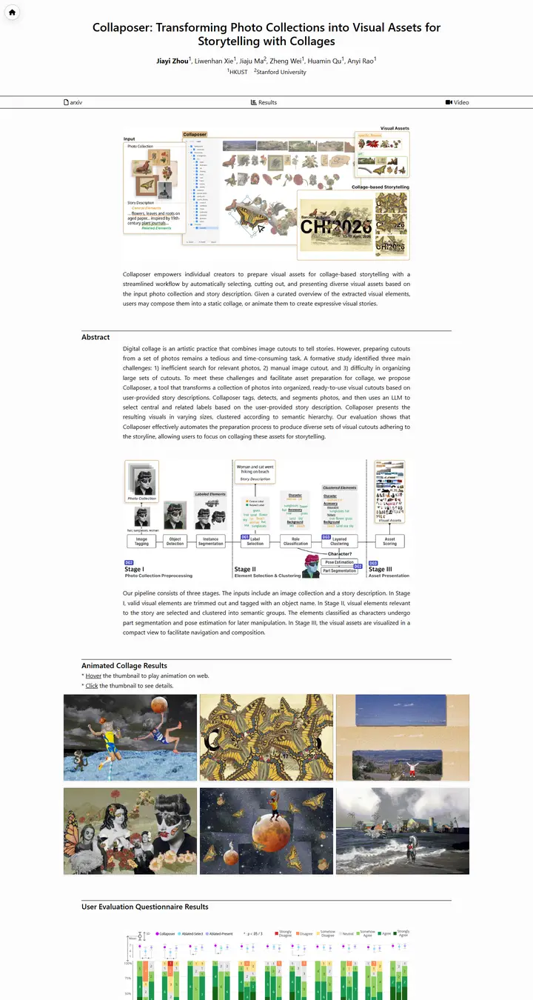

Collaposer: Transforming Photo Collections into Visual Assets for Storytelling with Collages
A scrapbook laid on a drafting table: black hairline rules, plain system type, and a wall of vintage cut-out collages doing all the talking.

Checked against the rendered page. The nav tab bar is not sticky in the render (position static), contrary to the selection note; Rubik is requested from Google Fonts but never applied.
Why it is here
Editorial ruled section headers, a sticky tab bar, a strong pipeline figure and an attractive 3x2 collage results gallery. The work is presented visually with a distinct look.
Overview
Color Palette
Typography
system UI stack
Collaposer: Transforming Photo Collections into Visual Assets for Stor
Abstract · Method · Results · BibTeX — 0123456789
Spacing & Shape
Page Modules
Guidelines
More like this

CRAFT: Training-Free Cascaded Retrieval for Tabular QA
A tidy product manual in pale blueprint blue, where every stage wears its own colored edge.

Efficient Self-Evaluation for Diffusion Language Models via Sequence Regeneration
A tidy stack of rounded cards washed in a blue-violet-apricot dawn, signed with a gradient wordmark.

FIGMA: Towards FIne-Grained Music retrievAl
A music journal on warm paper: a heavy Newsreader headline under a red kicker, big red serif numerals for the results, and figures resting in soft cream frames.

GuideDog: A Real-World Egocentric Multimodal Dataset for Blind and Low-Vision Accessibility-Aware Guidance
A quiet monograph page: one serif column, oxblood ink for the links, and a table that blushes only at its own row.

LaMI: Augmenting Large Language Models via Late Multi-Image Fusion
A careful conference handout: Noto Serif headings, navy outlined buttons and soft grey bands taking turns.

PairCoder++: Pair Programming as a Universal Paradigm for Verified Code-Driven Multimodal and Structured-Artifact Generation
A crisp white product page: a blue announcement strip, ink-black pill buttons and every figure on a soft-shadowed card.